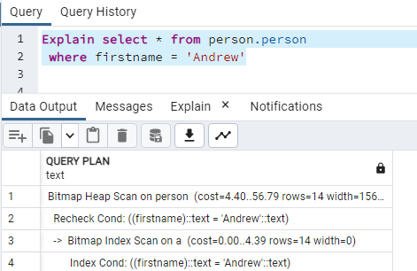
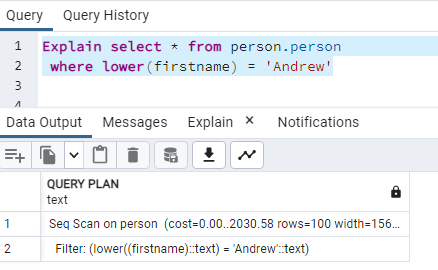
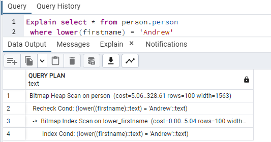
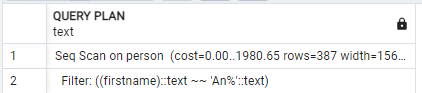
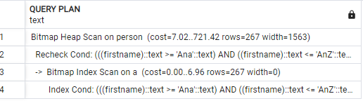
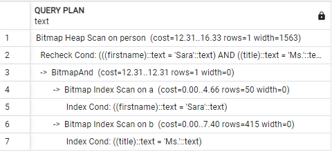
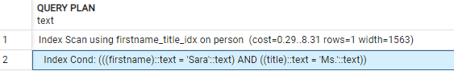
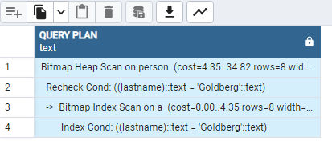
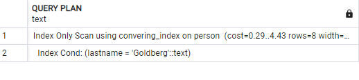

A query is short when the number of rows needed to compute its output is small, no matter how large the involved tables are. Short queries may read every row from small tables but read only a small percentage of rows from large tables
the smaller the number of records that correspond to one value of the index, the lower the index's selectivity value. We do not want to create indexes with high selectivity; index-based data retrieval in this case will take more time than a sequential scan.Since the PostgreSQL optimizer predetermines the cost of each access method, this index would never be used, so performance wouldn’t be compromised. However, it is still undesirable to add a database object that requires storage space and extra time to update but doesn’t provide any benefit.
The better (lower) the selectivity of an index, the faster the search. Thus, the most efficient indexes are unique indexes. An index is unique if for each indexed value there is exactly one matching row in the table.
A common misconception among SQL developers is that a primary key has to be an incrementing numeric value and that each table “has” to have a primary key. Although it often helps to have a numeric incremental primary key (called a surrogate key), a primary key does not have to be numeric, and moreover, it does not have to be a single-attribute constraint. It is possible to define a primary key as a combination of several attributes; it just has to satisfy two conditions: the combination must be UNIQUE and NOT NULL for all of the participating attributes. In contrast, unique constraints in PostgreSQL allow for NULL values. A table can have a single primary key (though a primary key is not required) and multiple unique constraints. Any non-null unique constraint can be chosen to be a primary key for a table; thus, there is no programmatic way to determine the best candidate for a table’s primary key.
consider i have table 'person.person' with 19972 records. i have index on
column firstname
when i search on this column it uses this index.look at following query

but if i transfer firstname column into another form what happens for execution plan. let's use lower function to see what is going on

it can't use index. so for this scenarios we can declare index with that function conversion. let's create index on function conversion.
CREATE index lower_firstname ON person.person(lower(firstname))
now we can see new execution plan

let's consider i want to filter those people that first name starts With 'An'. for this purpose i can write query like this.
select * from person.person
where firstname like 'An%'
it works fine. But if we look at the execution plan. we see that it doesn't use index. that's because B-Tree indexes doesn't support like operator.

One possible solution is to rewrite the query. for this scenario we can say that all records which firstname column is greather than 'Ana' and less than 'Anz'
select * from person.person
where firstname >= 'Ana' AND firstname <= 'AnZ'
here we can see the exection plan:

let's consider following query
SELECT * From person.person
where firstname = 'Sara' AND title = 'Ms.'

as you can see the query plan is created with two index scan and using BitmapAND to check the blocks need to fetch. But is there any way to just use one index? The answer is yes
let's create compoud index with following syntax
CREATE INDEX firstname_title_idx ON person.person(firstname, title)
with this index. the query plan has changed.

there is a note with compound index:
In general, an index on (X,Y,Z) will be used for searches on X, XY, and
XYZ and even (X,Z) but not on Y alone and not on YZ. Thus, when a compound
index is created, it's not enough to decide which columns to include;
their order must also be considered. Why create compound indexes? After
all, the previous section demonstrated that using several indexes together
will work just fine. There are two major reasons to create this type of
index: lower selectivity and additional data storage
When all the columns from a SELECT statement are included in a compound index, they may be retrieved without accessing the table. This is called the index-only-scan data retrieval method. All of the execution plans in the previous section still needed to read records from the table after they were located using the index scan, because we still needed the values from columns that were not included in the index.
let's consider following query:
SELECT businessentityid, firstname From person.person
where lastname = 'Goldberg'

we want to store all information we need with our index to speedup lookup here we need to specify to store information with index. here we can do this by writing following statement
create index convering_index on person.person(lastname) include (businessentityid, firstname) ;

this indexes called covering indexes. although we could use compound index but it is better for just storing another data with our index
As implied by the name, a partial index is built on a subset of a table, defined by the WHERE clause of the CREATE INDEX operator.
CREATE INDEX flight_actual_departure_not_null
ON flight(actual_departure)
WHERE actual_departure IS NOT NULL
we can modify selection criteria. Recall from the beginning of this chapter that column transformations can block the usage of indexes. At that time, it was framed as a negative impact of column transformation, but it can also be used to improve performance when the goal is to block index usage. If a column is of a numeric type, it can be modified by adding zero to its value. For example, the condition attr1+0=p_value will block the usage of an index on column attr1. For any data type, the coalesce() function will always block the usage of indexes, so, assuming attr2 is not nullable, the condition can be modified to something like coalesce(t1.attr2, '0')=coalesce(t2.attr2, '0').